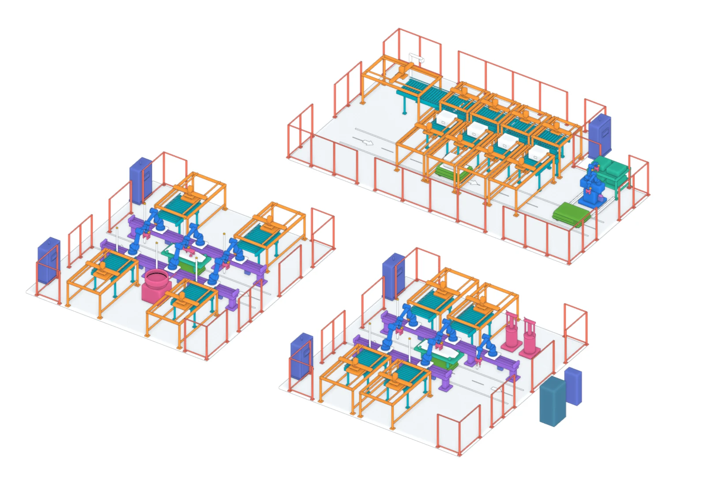

툴체인저·충전장치
A05 툴체인저 11조와 A09 AMR 충전·물류 부대장치 1식은 독립 형상이 없습니다. 전용 CAD와 공급 범위 확인이 필요합니다.
총괄5–세부1 · 2026년 1차년도
공정 구성에서 개별 장비까지,
하나의 배치로 살펴보는 구축 계획
공정 구역
로봇 협동 11 · 양팔 1
AMR 지그 2 · 부품 2
견적 구성 장비 대수와 구분

공급사 STEP을 바탕으로 한 개념형상입니다. 실제 건물의 실측 배치·설치 적합성을 나타내지 않습니다.
READ THE MODEL CORRECTLY
46개 품목은 견적 코드별 대응입니다. 모든 품목이 독립적인 상세 CAD로 확인된 것은 아닙니다.
A05 툴체인저 11조와 A09 AMR 충전·물류 부대장치 1식은 독립 형상이 없습니다. 전용 CAD와 공급 범위 확인이 필요합니다.
A17·A18·A19는 동일한 랙 외곽을 공유합니다. 화면의 랙은 세 품목의 내부 장비가 각각 분리된 모델을 의미하지 않습니다.
A03은 지그·클램프, A06은 말단 공구, A13은 HMI 외곽, A14는 방호 경계만 표현했습니다. 상세 구성은 별도 확인 대상입니다.
응용 S/W 7개, 시스템 연계 3개, 설치·시운전·교육 4개는 물리 장비 형상이 없는 기능·용역 항목으로 확인합니다.
제조사 상세 CAD, 로봇 리치·가반 검토, AMR·양팔 모델 확정, 설치 공간 실측, 동적 간섭 및 안전 검증은 이 개념 배치의 확인 범위에 포함되지 않습니다.